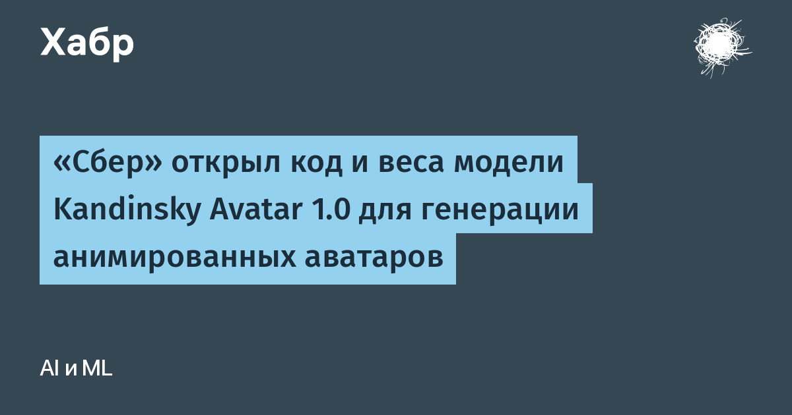

Семейство Kandinsky Avatar 1.0 (в академическом реестре — Kandinsky S2V 1.0) включает Lite с 2 млрд параметров для SD-видео и Pro с 21 млрд для HD. Модель принимает одно изображение, голосовую дорожку и текстовый запрос: манеру речи и эмоции можно задать словами, а аватаром сделать человека, героя мультфильма или животное. Видео строится в 25 кадров в секунду, липсинк, мимика, позы и жесты следуют за речью.
Обучение шло от базы Kandinsky 5.0 Video на датасете из 1,17 млн видеофрагментов с одним говорящим в кадре, на 95 языках. Вместо стандартного Wav2Vec или Whisper текст и аудио подаются через единый «фронтенд» Qwen2.5-Omni, а за консистентность лица отвечает трёхуровневая визуальная память. Отдельно выпущены дистиллированные версии: Pro генерирует видео за 16 шагов и ускоряется в 5,4 раза без потери качества по метрикам.
Pro сравнивали с ведущими открытыми и закрытыми моделями: участники смотрели пары роликов и выбирали лучший, не зная автора. Ролики Kandinsky Avatar 1.0 Pro выбирали чаще конкурентов — в 63% случаев против Kling Avatar 2, в 60% против LongCat-Avatar-1.5 и в 54% против HeyGen IV. На общепринятых бенчмарках речь-в-видео обе версии входят в число лидеров.
Заявленные сценарии — учебные и рекламные ролики, видеоинструкции, персональные обращения к клиентам. «Мы открываем модель, чтобы у российских разработчиков была собственная технологическая основа для таких решений — можно встраивать в свои продукты и дообучать, не создавая технологию с нуля», — пояснил Денис Димитров, управляющий директор по исследованию данных Сбербанка. За рубежом эту нишу держат закрытые HeyGen и аналогичные сервисы с оплатой за минуту ролика; теперь есть открытая альтернатива, которую можно крутить у себя.
Скромность обязательна: версии Lite хватит видеокарты Nvidia на 48 ГБ, для Pro в HD нужно 80 ГБ; при покадровом декодировании пик можно снизить до 28 ГБ, но на видео могут проступать границы участков. Код, веса и интеграция в ComfyUI и Diffusers уже лежат на GitHub, GitVerse и Hugging Face.